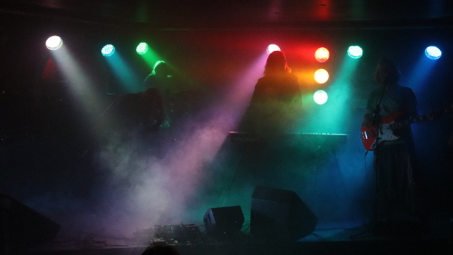
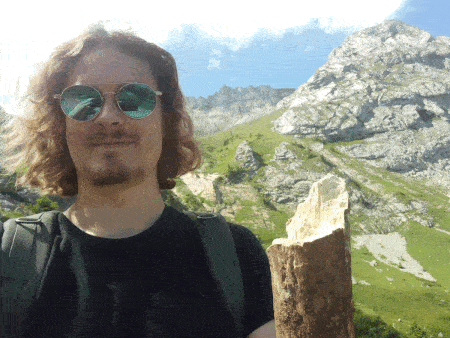
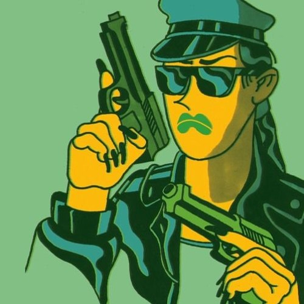
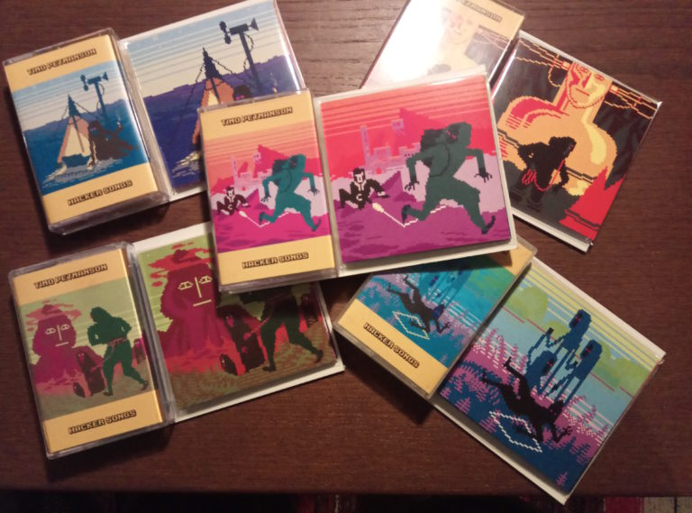
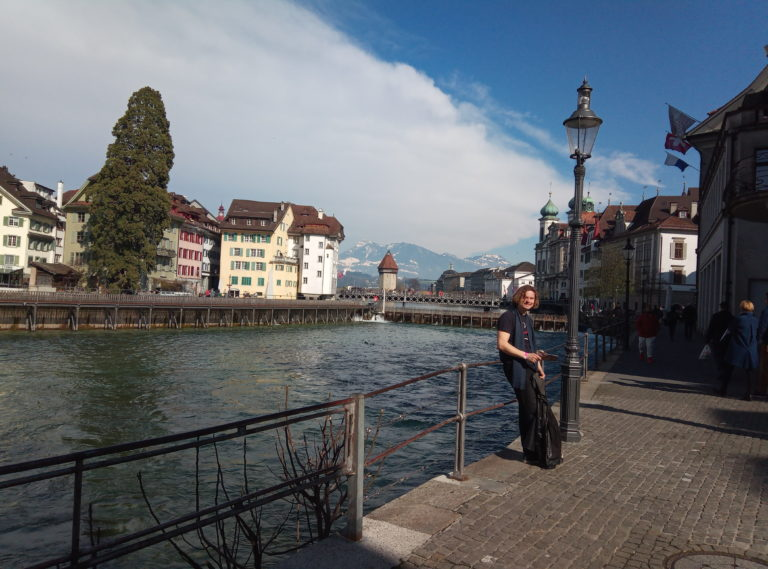

For the past year I've been working on an awesome computer game
Artist Life Simulator
by Interactive Fate which saw the official release today on Steam.
I created more than one hundred candidate songs and soundbites for the game, which needless to say, was quite a challenge :D
Nevertheless, going out of my usual comfort zone proved to be an extremly entertaining and valuable learning experience for me.
Otherwise I would have never probably explored the genres and sounds I did when composing music for this title.
Starting from rag-time and ending up with psytrance, the compositions touched quite a range of genres.
Interetingly, the most valuable lessons was something else, which I will discuss below.
Perhaps it is interesting to start by sharing how working on such huge project feels and looks like.
In the past, I've done soundtracks for video clips where I usually request a set of adjectives that would describe the mood of the video.
This is followed by a back-and-forth of updates and feedback until the complete track is produced.
However, with a project like Artist Life Simulator game, much more content is needed.
When we had our first talk with Edvin, the head of Interactive Fate, we really were not sure what is needed, except that the music
should fit into the era where the game was taking place --- early 21st century.
Of course, I'm not a classical composer, but I have some tricks up my sleeve to make this work.
Beside that, the game takes place in an alternative universe in a city called Nova Oportunia,
so some deviations in style would be completely acceptable and perhaps even intersting.
The game also has a unique aspect of condition and feeling cards that you acquire during gameplay.
The cards can describe emotions such as love, sadness, passion, frustration.
They can describe situations like madness, povertry and so on.
For a composer, this is a great set of guidelines how a particular track should sound like.
Of course, this is not as easy as one might think. For instance, how does "humility" sound like? Or what about "admiration of nature"?
The approach that really worked for me was not to over-think it and goign with whatever popped into my mind.
The approach of composing varied vastly from piece to piece. Sometimes I spent more than a week to finish a song, sometimes I
made five songs in a day.
Needless to say, not all songs yielded this way were not great and many needed to be scrapped.
But this experience tought me to create songs and do it all over and over again, even when I had zero inspiration.
This is the most valuable lesson I learned and fur sure helped to grow as a composer.
I usually only finish a small percentage of songs I start. My hard disk is full
of unfinished projects.
I felt I was pushed to my limits quite often as I often felt I was repeating myself.
But the time-pressure made me go on.
I did not had much time to work on the project either as I had my daily job, I started doing renovations at my apartment,
I was working hard with Mandarones as Summer of 2022 was full of concerts!
Yay to our 10th year anniversary (more about that in another post).
However, after playing the launched game, I was very satisfied with the result.
Huge kudos to Taavi Viikman for final mixing and editing that had a massive impact on the final result to blend the tracks into game
as they did.
So there you have it! If you want to hear more, go ahead and get the game
from Steam and enjoy!
Vabaduse lind
2022-08-27
Mandarones performed together with professional slackliner Tauri Vahesaar and his crew in Tartu and have an amazing perfomance.
Hypnobooster
2022-04-30
Hey guys, check this out!
Anna-Liisa Sääsk created an epic music video
for Mandarones song "Hypnobooster".
Back to the roots!!
2021-11-22

It has been a while since my last update here and there are plenty of news to share :D.
After almost three fabulous years in lovely Switzerland, I decided to get back to the roots and return to Estonia this summer.
So far, I've been loving it, I took a full six months of vacation and have been relaxing and chilling most of the time.
That said, there has been plenty I've been up to.
I performed "Voyage to Neptune" set at Türi rohefest,
wrote some music for Artist Life Simulator
and also met up with my old amigos from Mandarones compost rock collective.
We released EP "Catharsis" with songs recorded back in a day and have been collaborating with performance artists from TEMA movement.
Our last gig at Tartu Light Festival even had fire-show and acrobats on a tight-rope.
I was hoping to release also one solo album this year.
There is about three albums worth of material, some finished, some not, but none of it really fits well together.
Maybe I should just lower my standards, but I want to put together something that sounds great, is unique and tells a story.
That said, I don't feel a bit dissappointed if I can't make it this year.
In the zone ("Tsoonis") [2021]
2020-02-28
You know the feeling when you are in the zone, right?
Here is a DnB-like song made to acknowledge this really cool and special feeling.
Petmanson & Börchinger - Trumimasen [2020]
2020-11-22
The autumn leaves are falling again, marking the end of yet another year.
The world is painted in fabulous yellow, orange and red tones and cool wind gently breezes and roams
around the city.
A perfect time to make another song, this time with Benjamin Börchinger. We made an ultra-groovy
and ultra smooth lo-fi jazz song called "Trumimasen", which is a mix between Estonian "trummimasin" and
Japanese "sumimasen".
Recording this album made me realize that this is the sound and direction I would like to keep exploring
a little bit more. First, it is fun to play songs that are this long. Every take comes out completely
different. Secondly, the way the sounds keep blending into each other is pretty cool.
Trip to Mount Pilatus
2020-07-19

Almost everyone agrees that the best way to take some time off and relax in Switzerland is
going hiking in the mountains. It is the favourite activity of everyone I know here, including
myself. There are hundreds of mountains in Swiss Alps, not to mention countless smaller hills,
connected by passages, mountain rives and walking trails.
This time we decided to go conquer
Mount Pilatus, which is situated
next to Lucerne. We took a train to Alpnachstadt, which has two trails leading to the top and
is also connected by a cable car, which would be convenient getting back down.
Nevertheless, that was no easy walk in the park. The length of the track totalling 7km, starting
at 500m above sealevel, raising over 1,5km in altitude and ending on at top at 2,126m above sealevel.
It took us over 5 hours to get there and we were really lucky, because if we had come half an hour later,
we would have missed the last cable car going down. For some reason, the later ones were cancelled.
“Voyage To Neptune" album released [2020]
2020-06-08
Hallo Leute! Tere maakera! I am thrilled to present to you "Voyage to Neptune", a collection of songs
recorded in 2019 using live-looping technique with a keyboard and a drum machine,
each song recorded in a single take.
You will taste mostly jazzy, funky electronic music with occasional reggae and a tons of
edgy keyboard solos.
Hi folks!
So here is a psychedelic electro-ambient style recording utilizing
live-looping technique.
I hope you like the super-spacy sounds on this one!
For those who might be wondering, what does "Helisupp" mean, it is literally
"Soundsoup" in Estonian.
I guess I do really love night-time, because music sounds so much smoother and better.
So, here is a song dedicated to the inspiring darkness.
Actually, it took a while to get this song right, until I waited till 12AM to start playing.
Even then, it took a few days to complete it.
To be honest, I snatched some chords from an old song I haven’t played in years and
I don’t even think I have a recording of that.
Chords for reference:
Intro: Ebm / bass does notes
A: Ebm Gb Ebm Gb B Db Eb x2
B: Ebm B7 Bb7
Officer Raggaman is back!
2019-11-03

Cover art: Liisi Grünberg
Even in the future
we need someone
to catch the bad guys ..
Officer Raggaman
bringing peace to the world
that has changed
beyond recognition
forever
Here is the live looper version of one of my previous tracks: “Officer Raggaman”.
Officer Raggaman is a hero supercop fighting crime in future in our messed up world.
Ze has the strength of a man and wits of a woman, combining this into a powerful
crime-fighting machine.
Ze knows that reggae is about peace and so is law-enforcement,
which ze is a perfect manifestation of.
The original song in my opinion had this kind of 80s police movie feel to it with some
siren-like sounds. I tried to replicate that to a certain extent in this version as well.
I like also the overdriven synth sound that kind of reminds a guitar, but has some really alien feel to it.
Autumn Air [2019]
2019-11-02
It is getting colder and one can feel the how air is getting heavier.
The darkness is creeping into the daylight more and more.
Also, haven’t made a song for a while now, so it is time to keep it up!
In fact, I wanted to make something, but had no idea where to start,
so I asked N33me for some inspiration.
The suggestion was to go for a sad and romantic vibe, so here you go.
Greetings to Liisi, K-Real and other romanticists out there!
Daydreaming music video
2019-09-28
I am proud to present you the music video of “Daydreaming” made by my good friends
Dominika Olszewska and Tomek Zakrzewski. Special thanks go to Mirka Jackova,
Marta Bajena and Joanna Wawruch.
I think that the video captures the essence of the song perfectly.
Wandering around in the city of endless possibilities and experiencing it all.
The time and space seem to fade away and become non-existent,
while one thing remains the same: the daydream we live in.
The inspiration for the song actually comes a few months back, when I went to
Lucerne with Liisi to check out the Fumetto comic festival and just hang out
in the city and its numerous museums.
When I got home, my eyes were fuzzy, my legs were sore and I must have been still
tripping on crazy artwork I experienced throughout the day.
That’s when I came up with the song.
I find it amazing how Domi and Tomek have taken the sound of the song and used it to
create a visual experience on a completely another level.
When I watch the video, I feel exactly the same way as on the day spent in Lucerne.
I could not be happier to re-experience this again! Thanks a ton, guys!!
Make sure to check out the video from Domi’s
[Youtube channel]
and don’t forget to hit “Like” and “Subscribe”.
Photos by Dominika Olszewska.
"Hacker songs" special edition release!!
2019-09-11

I am proud to present a special collection of “Hacker songs” tapes.
Every copy includes all the coverwork by
Liisi Grünberg.
I am very proud to present you the release of “Hacker songs” album by
Trash Can Dance (Gert “Trash” Moser), limited to 36 cassette tapes.
Trash has been been publishing underground music for years,
including “Mandarones – Live Sessions”.
Photos by Gert "Trash" Moser.
If you would like to a have a copy, please contact
[Trash via Facebook] on his page.
If you don’t have a cassette player, you can nevertheless download the songs to your computer
as [MP3] or
[FLAC] or
check it out from my Soundcloud page.
NASA promises to get back to the Moon by 2024.
Elon Musk promises to get us to Mars the same year!
But when are we going to the Neptune?
Who knows, but I hope they listen to this song when they do!
I present you “Voyage to Neptune!”.
Summer Solstice [2019]
2019-06-23
This is it! Today is the longest day of the year on the Northern Hemisphere!
The night without sunset! Greetings to everyone who is celebrating
Daydreaming [2019]
2019-04-07
Today we went to Lucerne with Liisi to check out the Fumetto comic festival and just hang
out in the city and its numerous museums.
It was a really awesome day — walking by the Reuss river, chilling in the sunshine,
drinking coffee and watching tons of exhibitions from guillotines to really
trippy psychedelic pop art.

When I got home, my eyes were fuzzy, my legs were sore and I must have been still
tripping on Keiichi Tanaami’s crazy artwork.
So I say down and came up with this song — I think it captures the feelings and emotions
I experienced throughout the day quite accurately
Also, greetings to all my friends! See ya’ll soon!
Chords for reference:
Intro: Gm Eb
Part A: Gm
Part B: Eb D F
Foolishly funky [2019]
2019-03-26
I have to admit I really like funky and grooovy vibes. So, I could not help it and made this song.
Hello, internet! It will be soon a month since moving all my operations to Zürich!
Most of the organizational stuff is done and I am slowly starting to settle in.
I can’t wait until I can go to check out some of the mountains around the area to gather
some inspiration for working on a new set and album next year.
After packing my stuff in Estonia, I had to leave most of my gear behind as my
old Ford Focus would not probably have handled all the load.
Thanks to Funderbeam and Kirill for the Code25 MIDI keyboard that is on one of
the pictures, which I was able to squeeze in! It plays ball very nicely with Novation Circuit
and is very well programmable.
Still, it got me really confused at first why standard MIDI out was turned off by default.
NB! Press “edit” and “first octave B” to activate MIDI out on M-Audio Code25,
just in case you just landed on this page by Googling for solutions.
I really like Zürich, it reminds me a lot of Tartu — it is a cosy and lovely place to hang out.
There are a lot of good vibes around everywhere.
I am really looking forward to doing some great stuff while here!
Mars tropica [2018]
2018-05-11
Here is another ambient song for you guys.
If you ever get lost on Mars, listen to this 😉. Enjoy!
I am super happy for being featured in Raadio 2 in programme “Eesti Pops” with
Erkki Tero on 27.03.2018. Several tracks from “Hacker songs” album were played and broadcasted
to thousands of listeners yesterday.
Also, greetings and congrats to Etnosfäär, Rest Less, Exit Safe Mode, Taavi Tulev,
Peeter Vähi, Martin Kuuskmann, Moodul Stein and Pulzar.
“Hacker songs” is inspired from computer game music and tracker scene.
The tracks are arranged and composed using a mixture of techniques including sampling
real instruments, drawing waveforms manually and of course, digital sound synthesis.
Here is a small jam I made last week, titled as “Somatic Cosmos” (thanks Urmas Peiker)
Sorry for clicks and pops in audio, the laptop recording the audio and video had
trouble with multiple incoming audio streams.
Nevertheless, I wanted to release this demo.
>>>>>>> cb25800 (Added infite scroll, added some content I shouldve done long time ago)